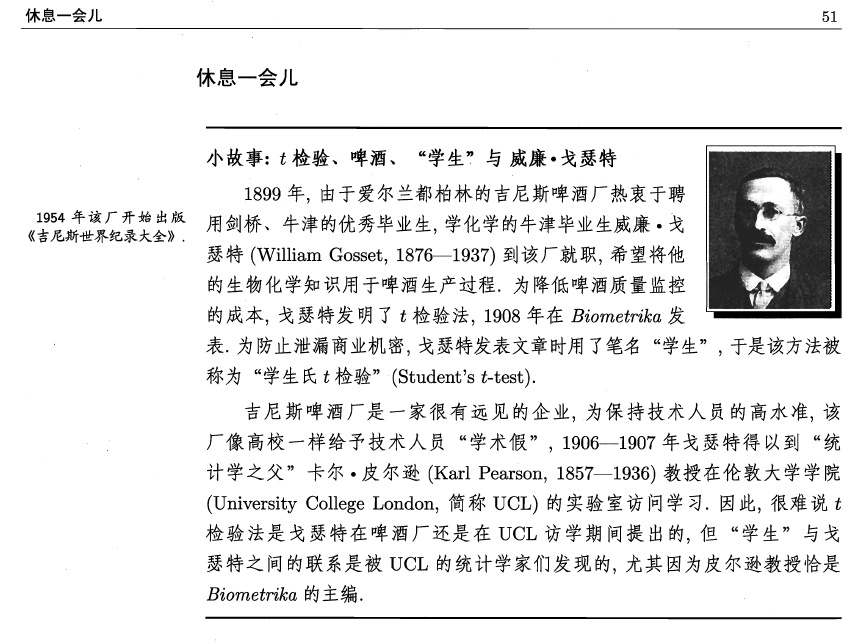

第 1 章 绪论
1.1 学科介绍
数理统计学是探讨随机现象统计规律的一门学科。它使用概率论和其它数学方法，研究怎样收集带有随机误差的数据，并在设定的统计模型下，对这种随机数据进行统计分析，以对所研究的问题作出统计推断。 由于所收集的统计数据只能反映问题的局部特征，数理统计的任务就在于从统计资料所反映的局部特征以概率论作为理论基础去推断事物的整体特征。一言以蔽之，由局部推断整体，如下图所示。
图 1.1: 统计推断示意图
数据是什么？本课程所涉及的数据是指带有随机性质的数据。随机性来源于数据产生机制的不确定性。在数据没有观测之前是不可以预知的。例如，测量数据是带有随机误差的，每次测量的结果不是固定的、可预测的数据。股票价格同样是不可以预知的。事实上，随机数据可以分成两种类型，一种是现实生活中收集到的真实数据，另一种是通过计算机模拟出来的数据。在一般情况下，我们并不完全知道真实数据是如何产生的，因此我们要通过统计的方法来研究产生该数据的机制，即背后的统计模型。模拟数据则是通过具体的统计模型来产生的数据，也就是蒙特卡罗方法抽样。这种方法常用于随机模拟计算，检验和比较统计方法的稳健性和优越性。
模型是什么？这里的模型是指产生随机数据的机制。一个很关键的问题是我们对这种机制的认知有多少？一无所知抑或了如指掌？实际上，我们不可能对这种机制百分之百地了解，否则就没有必要对数据进行分析。相反，由于我们对实际问题有或多或少的客观或者主观认识，所以我们对这种机制是有一定认识的。什么是客观认知？比如，我们得到了一枚硬币抛10次的数据（1代表正面朝上，0表示反面朝上）：1001001001。假如你的问题是研究这枚硬币的均匀性。此时，你会毫不犹豫假设这个数据来自一个二项分布\(B(1,p)\)模型，其中\(p\)是硬币正面朝上的概率，也就是所关心的均匀性。这里的客观性体现在此问题的分布类型是明确的——伯努利分布，你永远不会用正态分布或者其他连续型分布来刻画这种数据。尽管如此，我们对这种数据产生机制还不是100%确定的，未知部分在于\(p\)的取值。所以，对于一些问题，我们可以利用常见的概率分布客观地刻画随机数据的产生机制。然而，对于大部分实际问题，现有的分布并不能完美地刻画随机数据的产生机制。我们往往需要根据问题的特征进行统计建模，选择恰当的模型，此时就不可避免一些主观因素。统计分析是允许这种不完美性的。正如著名统计学家乔治·博克斯（1919—2013）所言，“本质上，所有模型都是错的，但有一些是有用的。” 作为一门实用的学科，我们尤其关注统计方法的实用性。
Essentially, all models are wrong, but some are useful. —— George Box
什么样的推断？由数据到整体的推理称为统计推断，有两种基本形式：
- 参数估计
假设模型可以表示成参数形式\(M(\theta)\)，其中\(M\)的形式已知，可以为简单的一类分布（如二项分布、正态分布），也可以为复杂的模型（如线性回归模型），但\(\theta\)是未知参数。现有来自该模型的数据\(X_1,X_2,\dots,X_n\)。一个基本问题是如何通过这些数据估计未知参数\(\theta\)。更一般地，我们希望估计形如\(g(\theta)\)的未知量，其中\(g(\cdot)\)为给定的函数。例如，考虑估计一个与模型相关事件\(A\)的概率\(P_\theta(A)\)，显然该概率可表示为参数\(\theta\)的函数\(g(\theta)\)。无论是估计模型中未知参数还是与模型参数相关的未知量都统称为参数估计问题。参数估计问题分为两种类型：点估计和区间估计，相应统计方法见第2章。
图 1.2: 灯泡寿命估计
- 假设检验
有时候我们不一定迫切想知道未知参数的具体值，而是想得到一个“真”或“假”的答案。比如，我们关心一个硬币是否均匀，这对“用抛硬币来做决定”的公平性至关重要。假设\(\theta\)表示这枚硬币正面朝上的概率，该问题也就变成判断\(\theta=0.5\)是否成立，而不是关心\(\theta\)的具体值是多少。诸如此类的问题数不胜数，比如，一种新药对某疾病是否凑效？这种新药是不是比传统药物更能缓解病情？在第4章的线性回归分析中，我们经常要判断回归方程是否显著，回归系数是否显著？这些判断命题真假的问题称为假设检验，严格的数学描述和检验方法见第3章。
图 1.3: 知乎上有关OPPO手机通话时间的问题
1.1.1 统计学的发展简史
统计学作为一门学科已有三百多年的历史。按统计方法及历史的演变顺序，通常可以将统计学的发展史分为三个阶段，分别是古典统计学时期、近代统计学时期和现代统计学时期。
- 第一个时期（古典统计学时期）
古典统计学的萌芽最早可以追溯到17世纪中叶，此时的欧洲正处于封建社会解体和资本主义兴起的阶段，工业、手工业快速增长，社会经历着重大变革。政治改革家们急需辅助国家经营和管理的数据证据以适应经济发展需要，此时一系列统计学的奠基工作在欧洲各国相继展开。这个阶段以描述性统计为主。代表性人物：高斯(C. F. Gauss, 1777-1855), 皮尔逊(K. Pearson, 1857-1936)等。
- 第二个时期（近代统计学时期）
20世纪初至第二次世界大战为近代统计学发展时期。科学技术开始进入全面繁荣时期，天文、气象、社会人口等领域的数据资料达到一定规模的积累，对统计的需求已从国家层面扩展至社会科学各个领域。对事物现象静态性的描述也已不能满足社会需求。一些重要的统计概念也在这一时期提出，误差测定、正态分布曲线、最小二乘法、大数定律等理论方法的大量运用为社会、经济、人口、法律等领域的研究提供了大量宝贵的指导。代表性人物：费希尔(R. A. Fisher, 1890-1962), 奈曼(J. Neyman, 1894-1981), 小皮尔逊(E. S. Pearson, 1895-1980), 许宝騄(1910-1970)等。
- 第三个时期（现代统计学时期）
二战后至今，得益于计算机的发展，统计方法渗透许多学科。这一阶段，统计在毒理学、分子生物学、临床试验等生物医学领域获得了大量应用，这些领域的发展又带动统计方法不断创新，主成分估计、非参数估计等方法应运而生。得益于高性能计算，贝叶斯学派蓬勃发展。
20世纪80年代开始，随着现代生物医学的发展，计算机技术的进步，人类对健康的管理和疾病的治疗已进入基因领域，对基因数据分析产生了大量需求。高维海量的基因数据具有全新的数据特征，变量维度远远大于样本数，传统的统计方法失效了，因此一系列面向高维数据的统计分析方法相继产生，比如著名的Lasso方法。
20世纪90年代以来，随着互联网的发展，数据库中积累了海量的数据，进入大数据时代。如何从海量的数据中挖掘有用的信息就变得越来越重要了，数据挖掘也就应运而生了。与数据挖掘比较接近的名词是机器学习, 机器学习被看作是人工智能的一个分支，主要是研究一些让计算机可以自动“学习”的算法，是一类从数据中自动分析获得规律，并利用规律对未知数据进行预测的算法。因为机器学习算法中涉及了很多的统计学理论，与统计学的关系密切，也被称为统计学习。
1.1.2 频率学派与贝叶斯学派
在统计学领域，存在两大学派，频率学派和贝叶斯学派。他们的分歧在于未知参数是否随机变量。这种分歧衍生出两种截然不同的统计思想。
频率学派（传统学派）
频率学派认为样本信息来自总体，仅通过研究样本信息可以对总体信息做出合理的推断和估计，并且样本越多，就越准确。
代表性人物：费希尔 (R. A. Fisher, 1890-1962)
贝叶斯学派
- 起源于英国学者贝叶斯(T. Bayes, 1702-1761)在1763年发表的著名论文《论有关机遇问题的求解》
- 最基本观点：任何一个未知量都可以看作是随机的，应该用一个概率分布去描述未知参数，而不是频率派认为的固定值。这种信息称为先验信息，是主观信息。
Good (1973)评价道：
“主观主义者直抒他们的判断，而客观主义者以假设来掩盖其判断，并以此享受科学客观性的荣耀。”
图 1.4: 生活大爆炸中的贝叶斯公式
贝叶斯统计的发展
- 自然语言处理：计算机翻译语言、识别语音、认识文字和海量文献的检索
南京市长江大桥欢迎您!
人工智能、无人驾驶
垃圾短信、垃圾邮件识别
如何在一个陌生的地方找餐馆吃饭？
1.1.3 统计学专业
统计学的应用涉及金融、经济、社会学、工程学、环境等多个领域，从而形成的相应的研究分支。其特点是多学科交叉、实用为主。
- 统计学专业包含理论统计和应用统计两方面
理论统计：模型选择，非参统计方法，贝叶斯统计，时间序列与生存分析，高维数据分析与机器学习，数据挖掘等等。
应用统计：目前发展最为突出的是生物统计，金融统计等等。
- 统计学经过漫长的发展，尤其是计算机的大量应用，目前包括但不限于下面这些分支（或者交叉领域）。目前最火热的学科都是跟计算机结合比较紧密的。
- 统计理论研究：大样本性质、各种渐近理论分析等
- 高维（超高维）统计推断：变量选择、大规模假设检验
- 统计计算方法：蒙特卡罗模拟、卡尔曼滤波算法、近似贝叶斯算法、自助法
- 生物统计：纵向分析、空间分析
- 统计学习：数据挖掘、人工智能
1.2 基本概念
本节介绍数理统计中一些基本概念：总体、样本、随机抽样。
1.2.1 总体
我们把研究对象的全体（包括有形的和潜在的）称作总体，其中每个成员称为个体。常用随机变量\(X\)来刻画一个总体（或者总体的特征值）。
例 1.3 考虑以下三个总体：
- 网上购物居民占全市居民的比例
- 过去一年内网购居民的购物次数
- 某品牌灯泡的寿命
总体\(X\)的分布函数\(F(x)\)未知或者部分未知，统计学的核心任务就是要对总体进行观测，并对所得数据推断总体的分布信息。
1.2.2 样本
研究总体可分为普查和抽样这两种方法。
- 普查（全数检查）
- 对总体中的每个个体进行观察，如我国每十年一次的人口普查
- 缺点：费用高、时间长、不适合破坏性试验
- 抽样
- 从总体中抽取若干个体进行观察，用所获得数据对总体进行统计推断
- 优点：费用低、时间短
- 抽取的部分组成的集合\((X_1,\dots,X_n)\)称为样本，\(X_i\)称为样品
- 样品个数\(n\)称为样本量或者样本容量
1.2.3 简单随机抽样
简单随机抽样满足以下两个特征：
- 随机性：每个个体都有相同的机会选中（有放回随机抽取/独立重复观测），即\(X_i\)与总体\(X\)同分布
- 独立性：每个样本的选取是独立的
这种方式得到的样本也称为简单随机样本。本课程所研究的均为简单随机样本，简称样本。常用记号\(X_i\stackrel{iid}{\sim} F\)表示独立同分布\(F\)，其中“iid”为independent and identically distributed 的缩写。
样本具有两重性
- 抽取之前无法预知它们的数值，故\((X_1,\dots,X_n)\)为\(n\)维随机向量
- 抽取后样本为具体的数，用小写字母\((x_1,\dots,x_n)\)表示，称为样本观测值
注：所有的统计分析都是基于随机变量，统计推断结论基于样本观测值（数据）。
1.2.4 案例
2018年高考全国II卷作文（适用地区: 内蒙古、黑龙江、辽宁、吉林、重庆、陕西、甘肃、宁夏、青海、新疆、西藏、海南）
“二战”期间，为了加强对战机的防护，英美军方调查了作战后幸存飞机上弹痕的分布，决定哪里弹痕多就加强哪里，然而统计学家瓦尔德(Abrahom Wald, 1902–1950)力排众议，指出更应该注意弹痕少的部位，因为这些部位受到重创的战机，很难有机会返航，而这部分数据被忽略了。事实证明沃德是正确的。
要求: 综合材料内容及含义，选好角度，确定立意，明确文体，自拟标题; 不要套作，不得抄袭; 不少于800字。
图 1.5: 幸存者偏见
在这个案例中，我们关心的总体是飞机的弹痕分布。那么，哪些是样本？是顺利返航飞机的弹痕？还是应该包含失事飞机的弹痕数据？显然后者不可忽略，否则推断总体就会出现很大偏差。在心理学上，这就是著名的“幸存者偏见”。
1.3 概率分布族
一般情况下，由于一些主观和客观的认识，我们都会对统计模型（总体）做出一些假定。通常地，假设总体\(X\)分布\(F(x)\)属于某个分布族\(\mathcal{F}\). 分为以下三类：
- 参数族
- \(\mathcal{F}\)中的分布的一般数学形式已知，但包含若干未知参数\(\theta=(\theta_1,\dots,\theta_m)\)
- \(\mathcal{F}:=\{F_\theta,\theta\in\Theta\}\), 其中\(\Theta\subset \mathbb{R}^m\)称为参数空间
- 该模型为参数统计问题，\(m\)为模型的维数
- \(m=1\)为单参数统计问题，\(m>1\)为多参数统计问题
- 非参数族
- 当\(\mathcal{F}\)中的分布不能通过有限个未知参数来刻画
- 该模型为非参数统计问题
- 半参数族
- \(\mathcal{F}\)中的分布有一部分可以用参数刻画，一部分则不可以。
为什么要引进分布族的概念？原因是我们不知道总体确切的分布，但基于部分信息，我们可以把考虑的范围缩小到一个明确的集合里面进行分析。在给定的集合里面，我们就可以讨论最优性，比较不同统计方法的优越等等。而缩小的幅度取决于对总体的了解程度。但值得注意的是，虽然总体有未知参数，但该总体对应的分布族应是明确的。对于参数分布族而言，分布类型是确定的，参数空间也是给定的范围。
1.3.1 常用的参数族
- 离散型
- 二项分布族\(\{b(n,p);0<p<1\}\)
- 几何分布族\(\{Ge(p);0<p<1\}\)
- 泊松分布族\(\{P(\lambda);\lambda>0\}\)
- 连续型
- 正态分布族\(\{N(\mu,\sigma^2);-\infty<\mu<\infty,\sigma>0\}\)
- 均匀分布族\(\{U(a,b);-\infty<a<b<\infty\}\)
- 指数分布族\(\{Exp(\lambda);\lambda>0\}\)
1.3.2 伽玛分布族
伽玛分布的密度函数为
\[f(x) = \frac{\lambda^\alpha}{\Gamma(\alpha)}x^{\alpha-1}e^{-\lambda x}1\{x> 0\},\] 其中\(\alpha>0\)称为形状参数，\(\lambda>0\)称为速率，\(1/\lambda\)称为尺度参数，\(\Gamma(\alpha)\)为伽马函数，定义及性质如下：
- \(\Gamma(\alpha)=\int_0^{+\infty} x^{\alpha-1}e^{-x}dx\)
- \(\Gamma(1)=1,\Gamma(1/2)=\sqrt{\pi}\)
- \(\Gamma(\alpha+1)=\alpha\Gamma(\alpha)\)
- 当\(\alpha\)为整数\(n\)时，\(\Gamma(n+1)=n!\)
伽玛分布记为\(Ga(\alpha,\lambda)\)，期望为\(\frac \alpha \lambda\)，方差为\(\frac \alpha {\lambda^2}\)。伽玛分布有两个特例：
- \(\alpha=1\)时伽玛分布为指数分布，即\(Ga(\alpha,\lambda)=Exp(\lambda)\)
- \(\alpha=n/2,\lambda=1/2\)时伽玛分布为自由度为\(n\)的卡方分布（后文提及），即\(Ga(n/2,1/2)=\chi^2(n)\)。
图 1.6: 伽马分布的密度函数示意图
性质1（可加性）：设\(X_1\sim Ga(\alpha_1,\lambda),\ X_2\sim Ga(\alpha_2,\lambda)\)。如果\(X_1\)与\(X_2\)独立，则 \[X_1+X_2\sim Ga(\alpha_1+\alpha_2,\lambda).\]
性质2（可乘性）：设\(X\sim Ga(\alpha,\lambda)\),则\(kX\sim Ga(\alpha,\lambda/k)\), 其中\(k>0\).
证明提示：\(Ga(\alpha,\lambda)\)分布的特征函数为
\[\phi(t)=E[e^{itX}]=\left(1-\frac{it}\lambda\right)^{-\alpha}.\]
性质2很好地解释了为什么称\(1/\lambda\)为尺度参数。
1.3.3 贝塔分布族
贝塔分布的密度函数为
\[f(x) = \frac{\Gamma(\alpha+\beta)}{\Gamma(\alpha)\Gamma(\beta)}x^{\alpha-1}(1-x)^{\beta-1}1\{0<x<1\},\] 其中\(\alpha>0,\beta>0\)为形状参数族。记为\(Beta(\alpha,\beta)\)，贝塔分布期望为\(\frac{\alpha}{\alpha+\beta}\)，方差：\(\frac{\alpha \beta}{(\alpha+\beta)^2(\alpha+\beta+1)}\)。
特例：当\(\alpha=\beta=1\)时，\(Beta(1,1)=U(0,1)\).
图 1.7: 贝塔分布密度函数示意图
贝塔分布常用于以下场合：
- 不合格率
- 市场占有率
- 命中率
1.3.4 指数型分布族
下面介绍一个更一般的分布族，包括了常见的分布。
定义 1.1 指数型分布族\(\mathcal{F}=\{f_\theta(x);\theta\in\Theta\}\)中的分布\(f_\theta(x)\)（分布列或者密度函数）都可以表示成如下形式：
\[f_\theta(x)=c(\theta)\exp\{\sum_{j=1}^kc_j(\theta)T_j(x)\}h(x),\]
其中，
- \(k\)为正整数，称为该指数分布族的“维数”。
- \(c(\theta)>0,c_j(\theta)\)为参数空间\(\Theta\)上的函数
- \(h(x)\ge 0\), \(T_1(x),\dots,T_k(x)\)线性无关
令\(\eta_j=c_j(\theta),\eta=(\eta_1,\dots,\eta_k)^\top\)，则分布函数可以变成关于新参数\(\eta\)的函数
\[f_\eta(x)=\tilde c(\eta)\exp\{\sum_{j=1}^k\eta_j T_j(x)\}h(x),\] 其中
\[\tilde c(\eta) = 1/\int \exp\{\sum_{j=1}^k\eta_j T_j(x)\}h(x)d x.\] 称\(\eta_i\)为自然参数。
常见的指数型分布族
- 正态分布族是指数型分布族
\[f(x,\mu,\sigma)=\frac 1{\sqrt{2\pi}\sigma}e^{-\mu^2/(2\sigma^2)}\exp\{\frac{\mu}{\sigma^2}x-\frac{1}{2\sigma^2}x^2\}\]
- 二项分布族是指数型分布族
\[P(X=x) = C_n^x p^x(1-p)^{n-x}=(1-p)^n\exp\{\ln[p/(1-p)]x \}C_n^x\]
- 伽玛/贝塔分布族是指数型分布族（请自行验证）
注意到指数型分布的支撑与参数\(\theta\)无关。因此排除了均匀分布族。指数型分布族的优点是能够把常见的分布纳入同一框架，有利于统计分析。
证明. 这是因为：
\[f_\theta(x_1,\dots,x_n)=\prod_{i=1}^np_\theta(x_i)=c(\theta)^n\exp\{\sum_{j=1}^kc_j(\theta)\sum_{i=1}^nT_j(x_i)\}\prod_{i=1}^nh(x_i).\]1.4 统计量与估计量
样本是总体的反映，但样本所含信息不能直接用于解决我们所要研究的问题，而需要把样本所含的信息进行数学上的加工使其浓缩起来，从而解决我们的问题。为此，数理统计学往往构造一个合适的依赖于样本的函数，我们称之为统计量。统计推断大多是基于（一个或者多个）统计量。
定义 1.2 如果\((X_1,\dots,X_n)\)为来自总体\(X\)的样本，若样本函数
\[T=T(X_1,\dots,X_n):\mathbb{R}^n\to \mathbb{R}\] 是不含有任何未知参数的（可测）函数，则称\(T\)为统计量。统计量的分布称为抽样分布。注：这里的未知参数常指以下几种：
- 分布中所含的未知参数
- 分布的数字特征：期望、方差、标准差、分位数等
- 某事件的概率
\[T_1 = \frac{\sqrt{n}(\sum_{i=1}^n X_i-\mu)}{\sigma},\]
\[T_2 = \min(X_1,\dots,X_n).\]
常见的统计量如下：
- 样本均值
\[\bar{X}=\bar X_n=\frac{1}{n}\sum_{i=1}^n X_i\]
- 样本方差
\[S_n^2=\frac{1}{n}\sum_{i=1}^n (X_i-\bar{X})^2\]
- 修正样本方差
\[S_n^{*2}=\frac{1}{n-1}\sum_{i=1}^n (X_i-\bar{X})^2=\frac{n}{n-1}S_n^2\]
- 样本标准差
\[S_n=\sqrt{S_n^2}\]
样本\(k\)阶原点矩 \[\overline{X^k}=\frac{1}{n}\sum_{i=1}^n X_i^k\]
样本\(k\)阶中心矩 \[\frac{1}{n}\sum_{i=1}^n (X_i-\bar X)^k\]
顺序统计量 \[X_{(1)}\le X_{(2)}\le \dots\le X_{(n)}\]
其中\(X_{(1)}=\min\{X_1,\dots,X_n\}\), \(X_{(n)}=\max\{X_1,\dots,X_n\}\), \(X_{(k)}\)为\({X_1,\dots,X_n}\)的递增排序的第\(k\)位。\(X_{(n)}-X_{(1)}\)样本极差。
- 样本中位数
\[ \tilde{X}= \begin{cases} X_{(\frac{n+1}{2})},\ &\text{$n$为奇数}\\ (X_{(\frac{n}{2})}+X_{(\frac{n}{2}+1)})/2,\ &\text{$n$为偶数} \end{cases} \]
注意：样本方差和修正样本方差相差一个常数倍，即\(S_n^2 = \frac{n-1}{n}S_n^{*2}\). 后面会看到为什么要引入修正样本方差，因为它是总体方差的无偏估计。
1.5 充分统计量
统计量各式各样，有些并不能反映有用的信息。但有一类统计量比较特殊，称为充分统计量，它能够
- 简化数据
- 不损失样本信息
注：上面是充分统计量的数学定义，该定义如何体现“不损失样本信息”这一特征呢？假设现在只知道充分统计量\(T\)的观测值为\(t\)，是否可以由此“恢复”样本数据？注意到在给定\(T=t\)条件下，样本\((X_1,\dots,X_n)\)的条件分布与参数\(\theta\)无关，我们可以通过这个条件分布随机生成样本\((X'_1,\dots,X'_n)\)。（为什么？）容易证明，\((X'_1,\dots,X'_n)\)的分布与\((X_1,\dots,X_n)\)一样。从这个角度上讲，充分统计量不损失样本信息。
- \(T_1=\sum_{i=1}^nX_i\)
- \(T_2=X_1+X_2\)
\[\begin{align*} P(X_1=x_1,\dots,X_n=x_n|T_1=t) &= \frac{P(X_1=x_1,\dots,X_n=x_n,T_1=t)}{P(T_1=t)}\\ &=\begin{cases} \frac{P(X_1=x_1,\dots,X_n=x_n)}{P(T_1=t)},\ &\sum_{i=1}^n x_i = t\\ 0, & else \end{cases} \\ &=\begin{cases} \frac{p^{\sum_{i=1}^n x_i}(1-p)^{n-\sum_{i=1}^n x_i}}{C_n^t p^t(1-p)^{n-t}},\ &\sum_{i=1}^n x_i = t\\ 0, & else \end{cases} \\&=\begin{cases} \frac 1{C_n^t},\ &\sum_{i=1}^n x_i = t\\ 0, & else \end{cases} \end{align*}\] 该分布与\(p\)无关，所以\(T_1\)是\(p\)的充分统计量。这意味着，如果知道\(T_1=t\)，则\((X_1,\dots,X_n)\)的取值只有\(C_n^t\)种，每种情况发生的可能性一样。此时，只需要在这\(C_n^t\)种情况中等可能抽样就可以“恢复数据”。
\[\begin{align*} P(X_1=x_1,\dots,X_n=x_n|T_2=t) &= \frac{P(X_1=x_1,\dots,X_n=x_n,T_2=t)}{P(T_2=t)} \\&=\frac{P(X_1=x_1,X_2=t-x_1,\dots,X_n=x_n)}{P(T_2=t)} \\&=\frac{p^{t+\sum_{i=3}^n x_i}(1-p)^{n-t-\sum_{i=3}^n x_i}}{C_2^t p^t(1-p)^{2-t}} \\&=\frac 1{C_2^t}p^{\sum_{i=3}^n x_i}(1-p)^{n-2-\sum_{i=3}^n x_i} \end{align*}\]
该分布与\(p\)相关，所以\(T_2\)不是\(p\)的充分统计量。
\[\begin{align*} P(X_1=x_1,\dots,X_n=x_n|T=t) &=\frac{P(X_1=x_1,\dots,X_n=x_n,T=t)}{P(T=t)} \\&=\frac{\prod_{i=1}^n[p(1-p)^{x_i-1}]}{C_{t-1}^{n-1} p^n (1-p)^{t-n}}=\frac{1}{C_{t-1}^{n-1}} \end{align*}\] 该分布与\(p\)无关，所以\(T\)是\(p\)的充分统计量。
证明. 由条件密度定义知，
\[\begin{align*} f_\theta(x_1,\dots,x_n|T(x_{1:n})=t)&=\frac{f_\theta(x_1,\dots,x_n,t)}{f^T_\theta(t)} \\&=\frac{f_\theta(t|x_1,\dots,x_n)f_\theta(x_1,\dots,x_n)}{f^T_\theta(t)} \\&= \frac{\prod_{i=1}^nf_\theta(x_i)1\{T(x_1,\dots,x_n)=t\}}{f^T_\theta(t)}. \end{align*}\]思考题: 顺序统计量\(X_{(1)},\dots,X_{(n)}\)是否充分统计量？
1.5.1 因子分解定理
前面几个例题是通过充分统计量的定义判断，需要求条件分布，比较繁琐。下面介绍因子分解定理，由J. Neyman和P. R. Halmos在20世纪40年代提出，能够很方便地判断/求解充分统计量。
定理 1.1 (因子分解定理) 设样本的分布为\(f_\theta(x_1,\dots,x_n)\)（在离散总体情况下表示样本的分布列，在连续总体情况下表示样本的密度函数）。则在统计量\(T\)是充分的当且仅当存在两个函数满足
- \(h(x_1,\dots,x_n)\)非负
- 在统计量\(T\)取值空间上的函数\(g_\theta(t)\), 使得
证明. 由于数学工具的限制，仅考虑离散情形。以下设\(t\)为\(T\)任意一种观测结果。
（1）必要性
由于\(T\)是充分的，不妨设\(P(X_{1:n}=x_{1:n}|T=t) = h(t,x_{1:n})\). 考虑到
\[\{X_{1:n}=x_{1:n}\}\subset \{T(X_{1:n})=T(x_{1:n})\}.\]
因此,
\[\begin{align*} P(X_{1:n}=x_{1:n})&= P(X_{1:n}=x_{1:n}, T(X_{1:n})=T(x_{1:n})) \\&=P(X_{1:n}=x_{1:n}|T(X_{1:n})=T(x_{1:n}))P(T(X_{1:n})=T(x_{1:n})) \\&=h(T(x_{1:n}),x_{1:n})g_\theta(T(x_{1:n})), \end{align*}\] 其中\(g_\theta\)为\(T\)的分布函数。
（2）充分性 设样本\(X_{1{:}n}\)的取值空间为\(\Omega\)，令\(A(t) = \{x_{1:n}\in \Omega|T(x_{1:n})=t\}\). 不难看出集合\(A(t)\)有至多可列个元素。 \[\begin{align*} P(X_{1:n}=x_{1:n}|T(X_{1:n})=t)) &= \frac{P(X_{1:n}=x_{1:n},X_{1:n}\in A(t))}{P(X_{1:n}\in A(t))}\\ &= \frac{P(X_{1:n}=x_{1:n})1\{x_{1:n}\in A(t)\}}{\sum_{y_{1:n}\in A(t)}P(X_{1:n}=y_{1:n})}\\ &= \frac{g_\theta(T(x_{1:n}))h(x_{1:n})1\{x_{1:n}\in A(t)\}}{\sum_{y_{1:n}\in A(t)}g_\theta(T(y_{1:n}))h(y_{1:n})}\\ &= \frac{g_\theta(t)h(x_{1:n})1\{x_{1:n}\in A(t)\}}{\sum_{y_{1:n}\in A(t)}g_\theta(t)h(y_{1:n})}\\ &= \frac{h(x_{1:n})1\{x_{1:n}\in A(t)\}}{\sum_{y_{1:n}\in A(t)}h(y_{1:n})} \end{align*}\] 与\(\theta\)无关，所以是充分的。1.5.2 因子分解定理的应用
解. 样本联合密度函数为
\[f_\theta(x_1,\dots,x_n) =\prod_{i=1}^n \frac 1\theta 1\{0<x_i<\theta\}=\frac 1{\theta^n}1\{x_{(1)}>0\}1\{x_{(n)}<\theta\}.\]
由因子分解定理知，\(X_{(n)}\)为\(\theta\)的充分统计量。- 参数\((\mu,\sigma^2)\)的充分统计量
- 当\(\sigma^2\)已知时，\(\mu\)的充分统计量
- 当\(\mu\)已知时，\(\sigma^2\)的充分统计量
解. 样本联合密度函数为
\[f_\theta(x_1,\dots,x_n) = \frac{1}{(2\pi)^{n/2}}e^{-\frac{\sum_{i=1}^n(x_i-\mu)^2}{2\sigma^2}}=\frac{1}{(2\pi)^{n/2}}e^{-\frac{\sum_{i=1}^n x_i^2-2\mu\sum_{i=1}^n x_i +n\mu^2}{2\sigma^2}}.\]
由因子分解定理，参数\((\mu,\sigma^2)\)的充分统计量为\((\sum_{i=1}^n x_i,\sum_{i=1}^n x_i^2)\). 当\(\sigma^2\)已知时，\(\mu\)的充分统计量为\(\bar X\); 当\(\mu\)已知时，\(\sigma^2\)的充分统计量为\(\sum_{i=1}^n(x_i-\mu)^2\)。
指数型分布族的充分统计量
指数型分布族下的样本分布为
\[f_\theta(x_1,\dots,x_n)=\prod_{i=1}^np_\theta(x_i)=c(\theta)^n\exp\{\sum_{j=1}^kc_j(\theta)\sum_{i=1}^nT_j(x_i)\}\prod_{i=1}^nh(x_i)\]
由因子分解定理知，参数\(\theta\)的一个充分统计量为
\[\left(\sum_{i=1}^nT_1(x_i),\dots,\sum_{i=1}^nT_k(x_i)\right).\]
注意到\(k\)是一个和样本量\(n\)无关的量。当\(n\)远远大于\(k\)的时候，该充分统计量可以大大简化数据，减小数据的“维数”。此外， 不难发现，充分统计量有无穷多个。
- \((\bar X, S_n)\)
- \((\bar X, S_n^2)\)
- \((\bar X, S_n^*)\)
- \((\bar X, S_n^{*2})\)
- \((\sum_{i=1}^n X_i,\sum_{i=1}^n X_i^2)\)
- \((\sum_{i=1}^n X_i,\sum_{i=1}^n |X_i|)\)
- \((\sum_{i=1}^n X_i,\sum_{i=1}^n |X_i|,\sum_{i=1}^n X_i^2)\)
思考：哪种降维效果最好？这需要引进最小充分统计量的概念。相关内容可以参考Jun Shao的专著《Mathematical Statistics》。
1.6 抽样分布
统计量的概率分布称为抽样分布，分为如下三类：
- 精确抽样分布
- 当总体\(X\)的分布已知时，对任意自然数\(n\)都能导出统计量\(T(X_1,\dots,X_n)\)的分布的显示表达式
- 对样本量\(n\)较小的统计推断问题（小样本问题）特别有用
- 精确抽样分布多数是在正态总体下得到
- 渐近抽样分布
- 寻求在样本量\(n\)无限大时统计量\(T(X_1,\dots,X_n)\)的极限分布
- 适用于对样本量\(n\)较大的统计推断问题（大样本问题）
- 常用的方法是中心极限定理
- 近似抽样分布
- 寻找一种分布来近似统计量\(T(X_1,\dots,X_n)\)的分布
1.6.1 样本均值的抽样分布
定理 1.3 设\(X_1,\dots,X_n\)为来自总体\(X\)的样本，\(\bar X\)为其样本均值。
- 如果\(X\sim N(\mu,\sigma^2)\)，则\(\bar X\)的精确分布为\(N(\mu,\sigma^2/n)\).
- 如果总体不是正态分布，但\(E[X]=\mu,Var[X]=\sigma^2\)存在，则\(\bar X\)的渐近分布为 \(N(\mu,\sigma^2/n)\)，记为\(\bar X\stackrel{\cdot}\sim N(\mu,\sigma^2/n)\).
下面比较不同样本量下均匀分布总体均值（标准化后）的分布，从中发现当\(n\)增大时，标准化后的分布与标准正态分布接近。
图 1.8: 均匀分布总体均值
1.6.2 卡方分布
定义 1.5 设\(X_i\stackrel{iid}\sim N(0,1),i=1,\dots,n\)，则称随机变量 \[X = X_1^2+\dots+X_n^2\] 的分布为自由度为\(n\)的卡方分布，记为\(\chi^2(n)\)。其密度函数为
\[f_n(x)=\frac{1}{2^{\frac n2}\Gamma(n/2)}x^{\frac n2-1}e^{-\frac x2} 1\{x>0\}.\]对比伽马分布密度函数可知，\(Ga(n/2,1/2)=\chi^2(n)\)。卡方分布的密度函数曲线如下图所示：
图 1.9: 卡方分布密度函数示意图
可加性：如果\(X\sim \chi^2(n)\), \(Y\sim \chi^2(m)\)且它们独立，则 \[X+Y\sim \chi^2(n+m).\]
容易计算卡方分布的期望和方差：\(E[X]=n,\ Var[X]=2n\)。由中心极限定理可得： \[\frac{X-n}{\sqrt{2n}}\stackrel{d}\to N(0,1),\] 其中\(\stackrel{d}\to\)表示依分布收敛。
1.6.3 正态总体抽样分布定理
正态分布是最常见的一种分布，本节研究正态总体下样本均值\(\bar X\)和样本方差\(S_n^2\)的联合分布以及边际分布。以下定理为数理统计学中最基本的定理，后面的章节中反复用到。
定理 1.4 设\((X_1,\dots,X_n)\)为来自总体\(X\sim N(\mu,\sigma^2)\)的样本，则
- \(\bar{X}\sim N(\mu,\sigma^2/n)\),
- \[\frac{nS_n^2}{\sigma^2}=\frac{\sum_{i=1}^n(X_i-\bar{X})^2}{\sigma^2}\sim \chi^2(n-1),\]
- 样本均值\(\bar{X}\)与样本方差\(S_n^2\)相互独立。
定理1.4实际上给出了样本均值\(\bar X\)和样本方差\(S_n^2\)的联合分布。 为证明这个定理，我们需要用到多元正态分布的性质。
证明. 令\(Y_{1:n}=(Y_1,\dots,Y_n)^\top=AX_{1:n}\)，则其CDF为：
\[\begin{align*} F_Y(y) &= P(Y_{1:n}\le y) = P(AX_{1:n}\le y) \\&=\int_{Ax\le y}\frac 1{(2\pi)^{n/2}|\Sigma|^{1/2}}e^{-(1/2)(x-\mu)^\top \Sigma^{-1}(x-\mu)}d x \\&=\int_{z\le y}|A^{-1}|\frac 1{(2\pi)^{n/2}|\Sigma|^{1/2}}e^{-(1/2)(A^{-1}z-\mu)^\top \Sigma^{-1}(A^{-1}z-\mu)}d z \\&=\int_{z\le y}\frac 1{(2\pi)^{n/2}|A\Sigma A^\top|^{1/2}}e^{-(1/2)(z-A\mu)^\top (A\Sigma A^\top)^{-1}(z-A\mu)}d z. \end{align*}\]
这表明\(Y_{1:n}\)的pdf为： \[f_Y(y) = \frac 1{(2\pi)^{n/2}|A\Sigma A^\top|^{1/2}}e^{-(1/2)(y-A\mu)^\top (A\Sigma A^\top)^{-1}(y-A\mu)},\] 即\(Y_{1:n}\sim N(A\mu,A\Sigma A^\top)\).注：该引理中\(A\)为可逆矩阵的条件可以放松为\(A\in \mathbb{R}^{m\times n}\)为行满秩矩阵，即\(\mathrm{rank}(A) = m\le n\)。（请读者自行证明）
定理1.4的证明： 易知\(X_{1:n}\sim N((\mu,\dots,\mu)^\top,\sigma^2 I_n)\). 假设\(A\)为如下正交矩阵：
\[ A=\left[ \begin{matrix} \frac 1{\sqrt{n}} & \frac 1{\sqrt{n}} & \frac 1{\sqrt{n}} & \cdots & \frac1{\sqrt{n}}\\ \frac 1{\sqrt{2\times 1}} & -\frac 1{\sqrt{2\times1}} & 0 & \cdots & 0\\ \frac 1{\sqrt{3\times 2}} & \frac 1{\sqrt{3\times2}} & -\frac 2{\sqrt{3\times2}} & \cdots & 0\\ \vdots & \vdots & \vdots & \vdots & \vdots \\ \frac 1{\sqrt{n\times (n-1)}} & \frac 1{\sqrt{n\times (n-1)}} & \frac {1}{\sqrt{n\times (n-1)}} & \cdots & -\frac {n-1}{\sqrt{n\times (n-1)}}\\ \end{matrix} \right]. \]
令\(Y_{1:n}=AX_{1:n}\). 由上面引理得，\(Y_{1:n}\sim N((\sqrt{n} \mu,0,\dots,0)^\top,\sigma^2 I_n)\). 注意到，\(Y_1 = \sqrt{n}\bar X\), 所以\(\bar X=Y_1/\sqrt{n}\sim N(\mu,\sigma^2/n)\). 又\[\sum_{i=1}^n Y_i^2 = Y_{1:n}^\top Y_{1:n} = (A X_{1:n})^\top A X_{1:n}=X_{1:n}^\top X_{1:n}=\sum_{i=1}^n X_i^2.\]
所以， \[\begin{align*} \frac{nS_n^2}{\sigma^2}&=\frac{\sum_{i=1}^n(X_i-\bar{X})^2}{\sigma^2}=\frac{\sum_{i=1}^nX_i^2-n(\bar X)^2}{\sigma^2} \\&=\frac{\sum_{i=1}^nY_i^2-Y_1^2}{\sigma^2}=\sum_{i=2}^n(Y_i/\sigma)^2\sim \chi^2(n-1), \end{align*}\] 这是因为\(Y_i\sim N(0,\sigma^2),i=2,\dots,n\). 由于\(Y_i\)相互独立，\(\bar X\)可以用\(Y_1\)表示，\(S_n^2\)可以用\(Y_2,\dots,Y_n\)表示，所以它们独立。证毕。
研究发现，只有正态总体才有“样本均值与方差独立”这一性质。
1.6.4 t分布
定义 1.6 设\(X\sim N(0,1), Y\sim \chi^2(n)\), 且它们独立，则称随机变量
\[T = \frac{X}{\sqrt{Y/n}}\] 的分布为自由度为\(n\)的学生氏t分布（简称t分布），记为\(T\sim t(n)\)。其密度函数为：
\[ f_n(x)= \frac{\Gamma\left(\frac{n+1}2\right)}{\sqrt{n\pi }\Gamma\left(\frac n2\right)}\left(1+\frac{x^2}n\right)^{-\frac{n+1}{2}}. \]图 1.10: t分布密度函数示意图
t分布的两种特例：
- 当\(n=1\)时，t分布成为柯西分布。
- 可以证明：\(\lim_{n\to\infty}f(x)=\frac{1}{\sqrt{2\pi}}e^{-\frac{x^2}{2}}\). 当\(n\ge 25\)时,可以认为t分布与\(N(0,1)\)接近。
由上图中可以看出当自由度\(n\)不断增大时，t分布越来越接近标准正态分布。
t分布的起源

1.6.5 样本均值与标准差之比的抽样分布
定理 1.5 设\((X_1,\dots,X_n)\)为来自总体\(X\sim N(\mu,\sigma^2)\)的样本，则
\[\frac{\bar{X}-\mu}{S_n/\sqrt{n-1}}=\frac{\bar{X}-\mu}{S_n^*/\sqrt{n}}\sim t(n-1).\]比较：
\[\frac{\bar{X}-\mu}{\sigma/\sqrt{n}}\sim N(0,1)\]
标准正态分布与t分布尾部概率\(P(|X|>c)\)的比较:
| 分布 | \(c=2\) | \(c=2.5\) | \(c=3\) | \(c=3.5\) |
|---|---|---|---|---|
| \(X\sim N(0,1)\) | 0.0455 | 0.0124 | 0.0027 | 0.000465 |
| \(X\sim t(4)\) | 0.1161 | 0.0668 | 0.0399 | 0.0249 |
从中可以看出，t分布是厚尾的，发生极端事件的概率比标准正态分布大。这点也可以通过比较两者的密度函数得知。t分布是密度函数是多项式衰减的，而标准正态分布是指数阶衰减的，远远比t分布衰减快。
1.6.6 F分布
定义 1.7 设\(X\sim \chi^2(m), Y\sim \chi^2(n)\), 且\(X,Y\)相互独立，则称随机变量
\[Z=\frac{X/m}{Y/n}\] 的分布为第一自由度为\(m\)、第二自由度为\(n\)的F分布，记\(Z\sim F(m,n)\)。其密度函数为
\[f_{mn}(x)= \frac{\Gamma((m+n)/2)}{\Gamma(m/2)\Gamma(n/2)}\left(\frac{m}{n}\right)^{m/2}x^{\frac m2-1}(1+mx/n)^{-(m+n)/2} 1\{x>0\}. \]F分布的性质：
- \(Z\sim F(m,n)\), 则\(1/Z\sim F(n,m)\).
- 如果\(T\sim t(n)\), 则\(T^2\sim F(1,n)\).
图 1.11: F分布密度函数示意图
1.6.7 两个独立正态总体的抽样分布
定理 1.6 设两独立总体\(X\sim N(\mu_1,\sigma_1^2)\),\(Y\sim N(\mu_2,\sigma_2^2)\)的样本分别为\((X_1,\dots,X_m),(Y_1,\dots,Y_n)\). 样本方差分别为\(S_{1m}^2,S_{2n}^2\). 则
\[\frac{(\bar X-\bar Y)-(\mu_1-\mu_2)}{\sqrt{\sigma_1^2/m+\sigma_2^2/n}}\sim N(0,1).\]
\[\frac{mS_{1m}^2/\sigma_1^2/(m-1)}{nS_{2n}^2/\sigma_2^2/(n-1)}=\frac{S_{1m}^{*2}\sigma_2^2}{S_{2n}^{*2}\sigma_1^2}\sim F(m-1,n-1). \]
如果\(\sigma_1=\sigma_2=\sigma\),
\[\frac{(\bar X-\bar Y)-(\mu_1-\mu_2)}{S_w\sqrt{1/m+1/n}}\sim t(m+n-2),\]
其中\(S_w =\sqrt{(mS_{1m}^2+nS_{2n}^2)/(m+n-2)}\).注：\(S_w^2\)称为合并的样本方差。
1.6.8 顺序统计量
定理 1.7 若\(X_1,\dots,X_n\)独立同分布，分布函数和密度函数分别为\(F(x),f(x)\). 则\(X_{(1)}=\min(X_1,\dots,X_n)\)的分布函数和密度函数分别
\[\begin{cases} F_{X_{(1)}}(x) = 1-(1-F(x))^n\\ f_{X_{(1)}}(x) = n(1-F(x))^{n-1}f(x). \end{cases} \] \(X_{(n)}=\max(X_1,\dots,X_n)\)的分布函数和密度函数分别
\[\begin{cases} F_{X_{(n)}}(x) = F(x)^n\\ f_{X_{(n)}}(x) = nF(x)^{n-1}f(x). \end{cases} \] 更一般地，对任意\(k\in \{1,\dots,n\}\)有
\[f_{X_{(k)}}(x) = \frac{n!}{(n-k)!(k-1)!}F(x)^{k-1}[1-F(x)]^{n-k}f(x).\]定理 1.8 顺序统计量\((X_{(i)},X_{(j)})(i<j)\)的联合密度函数为
\[\begin{align*} f_{X_{(i)},X_{(j)}}(x,y) &= \frac{n!}{(i-1)!(j-i-1)!(n-j)!}F(x)^{i-1} [F(y)-F(x)]^{j-i-1}\\ &\times [1-F(y)]^{n-j}f(x)f(y) 1\{x\le y\}. \end{align*}\]定理 1.9 顺序统计量\((X_{(1)},\dots,X_{(n)})\)的联合密度函数为
\[ f(y_1,\dots,y_n)= \begin{cases} n!\prod_{i=1}^nf(y_i),&y_1<y_2<\dots<y_n\\ 0,&else. \end{cases} \]1.7 分位数
定义 1.8 设\(X\)的分布函数为\(F(x)\). 对于任意\(\alpha\in(0,1)\), \(\alpha\)分位数定义为
\[x_\alpha=F^{-1}(\alpha)=\inf\{t\in\mathbb{R}|F(t)\ge \alpha\}.\]图 1.12: CDF的逆
由于分布函数是右连续函数，求逆时可能出现上图展示的三种情况。
常见的四种分位数符号：
- 标准正态分布分位数记为\(u_{\alpha}\)
- \(t\)分布分位数记为\(t_{\alpha}(n)\)
- \(\chi^2\)分布分位数记为\(\chi^2_{\alpha}(n)\)
- \(F\)分布分位数记为\(F_{\alpha}(m,n)\)
一些说明：
- 在分位点表中对于标准正态分布、\(t\)分布和F分布只能查到\(\alpha>1/2\)的分位数，需利用以下对称性间接查\(\alpha<1/2\)的分位数：
\[u_\alpha=-u_{1-\alpha},\ t_\alpha(n)=-t_{1-\alpha}(n),\ F_{\alpha}(m,n)=\frac{1}{F_{1-\alpha}(n,m)}.\]
对于\(t(n)\)分布，由于当\(n\to \infty\)时，其极限分布为\(N(0,1)\), 所以自由度\(n\)比较大时，\(t_{\alpha}(n)\approx u_{\alpha}\).
若\(X\sim \chi^2(n)\)分布，由于当\(n\to \infty\)时，\((X-n)/\sqrt{2n}\stackrel{d}\to N(0,1)\), 所以自由度\(n\)比较大时，\(\chi^2_{\alpha}(n)\approx u_{\alpha}\sqrt{2n}+n\).
图 1.13: 分位数示意图
1.8 本章习题
习题 1.1 韦布尔分布(Weibull distribution)族
\[p(x)=\frac k\lambda\left(\frac{x}{\lambda}\right)^{k-1}e^{-(x/\lambda)^k}1\{x\ge 0\},k>0,\lambda>0\]
是不是指数型分布族？ ( )
A. 是
B. 不是
习题 1.2 从均值为\(\mu\), 方差为\(\sigma^2\)的总体中随机抽取样本量为\(n\)的样本\(x_1,\dots,x_n\), 其中\(\mu,\sigma^2\)均未知，指出下列样本函数中哪些为统计量? ( )
A. \(T_1=x_1+x_2-2\mu\)
B. \(T_2=(x_1-\mu)/\sigma\)
C. \(T_3=(\bar x-10)/5\)
D. \(T_4=\frac 1 n\sum_{i=1}^n(x_i-S_n)^2\)
习题 1.3 设\(\bar x_n,s_n^2\)表示样本\(x_1,\dots,x_n\)的样本均值与样本方差。已知
\[n=15,\bar x_{n}=168, s_n=11.43, x_{n+1}=170.\]
求\(\bar x_{n+1},s_{n+1}^2\)，以及修正样本方差\(s_{n+1}^{*2}\).
习题 1.4 设\(X_1\sim Ga(\alpha_1,\lambda)\), \(X_2\sim Ga(\alpha_2,\lambda)\), 且\(X_1\)与\(X_2\)独立。证明
- \(Y_1=X_1+X_2\sim Ga(\alpha_1+\alpha_2,\lambda)\)
- \(Y_2=X_1/(X_1+X_2)\sim Beta(\alpha_1,\alpha_2)\)
- \(Y_1\)与\(Y_2\)独立
习题 1.5 设\(X_1,\dots,X_n\)是来自某连续总体的一个样本，总体的分布函数\(F(x)\)是连续严增函数，证明：统计量\(T=-2\sum_{i=1}^n \ln F(X_i)\sim \chi^2(2n)\).
习题 1.6 从正态总体\(N(52,6.3^2)\)中随机抽取容量为36的样本。
- 求样本均值\(\bar X\)的分布；
- 求\(\bar X\)落在区间\((50.8,53.8)\)内的概率；
- 若要以\(99\%\)的概率保证\(|\bar X-52|<2\), 试问样本量至少应取多少？
习题 1.7 设随机变量\(X\sim N(0,1)\), 对给定的\(\alpha\in(0,1)\), 数\(u_{\alpha}\) 满足\(P(X>u_\alpha)=\alpha\). 若\(P(|X|<x)=\alpha\), 则\(x\)等于( )。
A. \(u_{\alpha/2}\)
B. \(u_{1-\alpha/2}\)
C. \(u_{(1-\alpha)/2}\)
D. \(u_{1-\alpha}\)
习题 1.8 设\(X_1,\dots,X_n\)为总体\(N(1,2^2)\)的样本，下面正确的是( )。
A. \(\frac{\bar X-1}{2/\sqrt{n}}\sim t(n)\)
B. \(\frac{1}{4}\sum_{i=1}^n(X_i-1)^2\sim F(n,1)\)
C. \(\frac{\bar X-1}{\sqrt{2}/\sqrt{n}}\sim N(0,1)\)
D. \(\frac{1}{4}\sum_{i=1}^n(X_i-1)^2\sim \chi^2(n)\)
习题 1.9 设\(X_1,\dots,X_{15}\)为总体\(N(0,2^2)\)的样本，则统计量
\[Y=\frac{X_1^2+\dots+X_{10}^2}{2(X_{11}^2+\dots+X_{15}^2)}\]
的分布为( )。
A. \(F(10,5)\)
B. \(F(11,4)\)
C. \(\chi^2(10)\)
D. 以上都不是
习题 1.10 设\(X_1,\dots,X_n\)是来自双参数指数分布
\[p(x;\mu,\theta)=\frac 1\theta \exp\{-(x-\mu)/\theta\}, x>\mu,\theta>0\]
的一个样本，证明\((\bar X,X_{(1)})\)是该分布的充分统计量。
习题 1.11 设\(X_1,\dots,X_n\)是来自密度函数
\[p_\theta(x)=\theta/x^2,\ 0<\theta<x<\infty\]
的一个样本，求参数\(\theta\)的充分统计量。
习题 1.12 Let \(X_1,X_2,\dots,X_6\) be a simple random sample taken from \(N(0,2^2)\). Denote
\[Y = (X_1+X_2)^2+(X_3+X_4)^2+(X_5+X_6)^2.\] If \(kY\sim \chi^2(3)\), then \(k=\)?